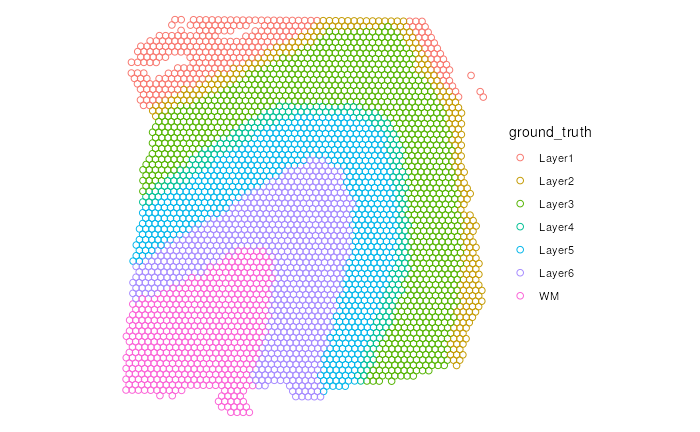
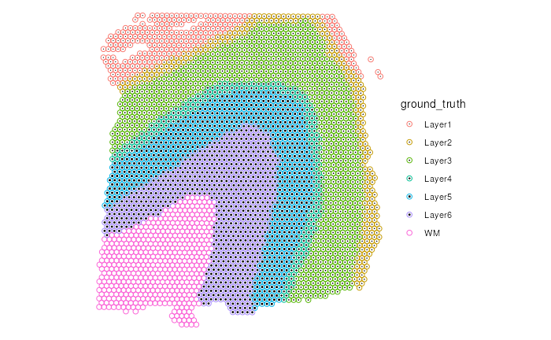
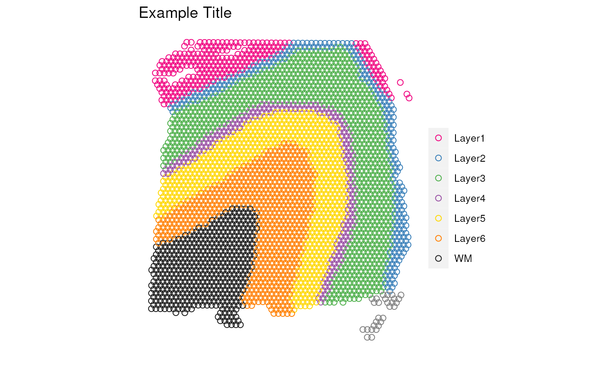

Create Multi-dimensional Plot of Spatially-resolved Transcriptomics Data
Boyi Guo
Johns Hopkins Bloomberg School of Public Health, Baltimore, MD, USAStephanie C. Hicks
Johns Hopkins Bloomberg School of Public Health, Baltimore, MD, USASource:
vignettes/SRT_eg.Rmd
SRT_eg.RmdIntroduction
The goal of escheR is to create an unified multi-dimensional spatial visualizations for spatially-resolved transcriptomics data following Gestalt principles.
Our preprint describing the innovative visualization is available from bioRxiv.
Installation
You can install the development version of escheR from GitHub with:
if(!require("devtools")) install.packages("devtools")
devtools::install_github("boyiguo1/escheR")The authors are submitting the package to Bioconductor.
Input data format
In the examples below, we assume the input data are provided as a SpatialExperiment
Bioconductor object. For people whose data are stored as a Seurat
object, we advise to convert to a SpatialExperiment object
before applying the workflow below.
Tutorial
Load Packages
To run the demonstration, there are two necessary packages to load,
escheR and spatialLIBD. spatialLIBD
contains a pre-processed 10x Visium dataset.
To note, escheR will automatically load
ggplot2 package. Hence, explicitly loading
ggplot2 is not required.
Preparing Exmaple Data
In this step, we will find one 10xVisium sample from
spatialLIBD package, indexed by “Br8667_mid” by subsetting
from the overall dorsolateral pre-frontal cortex (DLPFC) dataset
spatialDLPFC_Visium.
if (!exists("spe"))
spe <- fetch_data("spatialDLPFC_Visium")
spe <- spe[, spe$sample_id == "Br8667_mid"]We also apply an optional step, creating an categorical variable
named spDomain.
colData(spe)$spDomain <- factor(
spe$BayesSpace_harmony_09,
levels = c(1, 2, 3, 5, 8, 4, 7, 6, 9),
labels = c("L1", "L1", "L2", "L3", "L4", "L5", "L6", "WM", "WM")
)Here is a summary of the SpatialExperiment object called
spe.
spe
#> class: SpatialExperiment
#> dim: 28916 3939
#> metadata(1): BayesSpace.data
#> assays(2): counts logcounts
#> rownames(28916): ENSG00000243485 ENSG00000238009 ... ENSG00000278817
#> ENSG00000277196
#> rowData names(7): source type ... gene_type gene_search
#> colnames(3939): AAACAACGAATAGTTC-1 AAACAAGTATCTCCCA-1 ...
#> TTGTTTGTATTACACG-1 TTGTTTGTGTAAATTC-1
#> colData names(156): age array_col ... wrinkle_type spDomain
#> reducedDimNames(8): 10x_pca 10x_tsne ... HARMONY UMAP.HARMONY
#> mainExpName: NULL
#> altExpNames(0):
#> spatialCoords names(2) : pxl_col_in_fullres pxl_row_in_fullres
#> imgData names(4): sample_id image_id data scaleFactorSetting up for escheR plot
Similar to ggplot2::ggplot(), we first use the function
make_escheR() to create an empty plot. The input of
make_escheR() is a SpatialExperiment
object. The output of the function is a ggplot object with
no layer in it.
p <- make_escheR(spe)Adding layers
Unlike ggplot2, we use piping |> instead
of + to apply layers the figure. Mainly, we have three
functions add_fill, add_ground,
add_symbol. The inputs of these add_*
functions include the plots created using make_scheR() and
the variable name for the layer. Currently, the variable name should be
in the the column data of the spe object,
i.e. colData(spe).
Here we first apply the add_fill to add the spots
color-coded by the total umi counts of all
spots(sum_umi).
p |>
add_fill(var = "sum_umi")
It is okay to use any combination of the add_*
functions. For example, we want to show the spatial domains of the
samples as the ground of the figure and use symbols to denote if each
spot is within the outline of the tissue slice. In this example, all
plotted spots are in the outlines of the tissue slice and hence marked
with dots.
(p2 <- p |>
add_ground(var = "spDomain")) # round layer
p2 |>
add_symbol(var = "in_tissue", size = 0.2) # Symbol layer
It is okay to change the ordering of these add_*
functions. However, we advise to always have the add_fill
as the first step to achieve the best visual effect due to the laying
mechanism.
Adjusting Aesthetics
To change the aesthetics of each layer, one can simply use the
scale_* from ggplot2 to optimize the final
visual presentation. For example, to optimize add_fill, one
can use scale_fill_*; to optimize add_ground,
one can use scale_color_*; to optimize
add_sumbol, one use scale_shape_*. Here, we
demonstrate how to change the color for the ground layer (
add_ground) using scale_color_manual.
# Currated color pallette from spatialLIBD
spatialLIBD::libd_layer_colors
#> Layer1 Layer2 Layer3 Layer4 Layer5
#> "#F0027F" "#377EB8" "#4DAF4A" "#984EA3" "#FFD700"
#> Layer6 WM NA WM2
#> "#FF7F00" "#1A1A1A" "transparent" "#666666"
p2 +
scale_color_manual(
name = "", # No legend name
values = libd_layer_colors |> # Named vector for color
setNames(c(paste0("L", 1:6), "WM", "NA", "WM2"))
) +
labs(title = "Example Title")
Session information
sessionInfo()
#> R version 4.2.1 (2022-06-23)
#> Platform: x86_64-apple-darwin17.0 (64-bit)
#> Running under: macOS Big Sur ... 10.16
#>
#> Matrix products: default
#> BLAS: /Library/Frameworks/R.framework/Versions/4.2/Resources/lib/libRblas.0.dylib
#> LAPACK: /Library/Frameworks/R.framework/Versions/4.2/Resources/lib/libRlapack.dylib
#>
#> locale:
#> [1] en_US.UTF-8/en_US.UTF-8/en_US.UTF-8/C/en_US.UTF-8/en_US.UTF-8
#>
#> attached base packages:
#> [1] stats4 stats graphics grDevices utils datasets methods
#> [8] base
#>
#> other attached packages:
#> [1] spatialLIBD_1.11.9 SpatialExperiment_1.6.1
#> [3] SingleCellExperiment_1.18.1 SummarizedExperiment_1.26.1
#> [5] Biobase_2.56.0 GenomicRanges_1.48.0
#> [7] GenomeInfoDb_1.32.4 IRanges_2.30.1
#> [9] S4Vectors_0.34.0 BiocGenerics_0.42.0
#> [11] MatrixGenerics_1.8.1 matrixStats_0.63.0
#> [13] escheR_0.1.0 ggplot2_3.4.1
#> [15] BiocStyle_2.24.0
#>
#> loaded via a namespace (and not attached):
#> [1] utf8_1.2.3 R.utils_2.12.2
#> [3] tidyselect_1.2.0 RSQLite_2.3.0
#> [5] AnnotationDbi_1.58.0 htmlwidgets_1.6.1
#> [7] grid_4.2.1 BiocParallel_1.30.4
#> [9] DropletUtils_1.16.0 munsell_0.5.0
#> [11] ScaledMatrix_1.4.1 codetools_0.2-19
#> [13] ragg_1.2.5 statmod_1.5.0
#> [15] DT_0.27 withr_2.5.0
#> [17] colorspace_2.1-0 filelock_1.0.2
#> [19] config_0.3.1 highr_0.10
#> [21] knitr_1.42 rstudioapi_0.14
#> [23] shinyWidgets_0.7.6 labeling_0.4.2
#> [25] GenomeInfoDbData_1.2.8 bit64_4.0.5
#> [27] farver_2.1.1 rhdf5_2.40.0
#> [29] rprojroot_2.0.3 vctrs_0.5.2
#> [31] generics_0.1.3 xfun_0.37
#> [33] BiocFileCache_2.4.0 R6_2.5.1
#> [35] doParallel_1.0.17 ggbeeswarm_0.7.1
#> [37] rsvd_1.0.5 locfit_1.5-9.7
#> [39] fields_14.1 bitops_1.0-7
#> [41] rhdf5filters_1.8.0 cachem_1.0.7
#> [43] DelayedArray_0.22.0 promises_1.2.0.1
#> [45] BiocIO_1.6.0 scales_1.2.1
#> [47] beeswarm_0.4.0 gtable_0.3.1
#> [49] beachmat_2.12.0 benchmarkmeData_1.0.4
#> [51] spam_2.9-1 rlang_1.0.6
#> [53] systemfonts_1.0.4 rtracklayer_1.56.1
#> [55] lazyeval_0.2.2 BiocManager_1.30.20
#> [57] yaml_2.3.7 httpuv_1.6.9
#> [59] tools_4.2.1 usethis_2.1.6
#> [61] bookdown_0.33 ellipsis_0.3.2
#> [63] jquerylib_0.1.4 RColorBrewer_1.1-3
#> [65] sessioninfo_1.2.2 Rcpp_1.0.10
#> [67] sparseMatrixStats_1.8.0 zlibbioc_1.42.0
#> [69] purrr_1.0.1 RCurl_1.98-1.10
#> [71] viridis_0.6.2 cowplot_1.1.1
#> [73] ggrepel_0.9.3 fs_1.6.1
#> [75] magrittr_2.0.3 data.table_1.14.8
#> [77] magick_2.7.3 pkgload_1.3.2
#> [79] mime_0.12 evaluate_0.20
#> [81] xtable_1.8-4 XML_3.99-0.13
#> [83] gridExtra_2.3 compiler_4.2.1
#> [85] scater_1.24.0 tibble_3.2.0
#> [87] maps_3.4.1 crayon_1.5.2
#> [89] R.oo_1.25.0 htmltools_0.5.4
#> [91] later_1.3.0 tidyr_1.3.0
#> [93] DBI_1.1.3 ExperimentHub_2.4.0
#> [95] dbplyr_2.3.1 rappdirs_0.3.3
#> [97] Matrix_1.5-3 cli_3.6.0
#> [99] R.methodsS3_1.8.2 benchmarkme_1.0.8
#> [101] parallel_4.2.1 dotCall64_1.0-2
#> [103] golem_0.3.5 pkgconfig_2.0.3
#> [105] pkgdown_2.0.7 GenomicAlignments_1.32.1
#> [107] plotly_4.10.1 scuttle_1.6.3
#> [109] xml2_1.3.3 roxygen2_7.2.3
#> [111] paletteer_1.5.0 foreach_1.5.2
#> [113] vipor_0.4.5 bslib_0.4.2
#> [115] dqrng_0.3.0 XVector_0.36.0
#> [117] attempt_0.3.1 stringr_1.5.0
#> [119] digest_0.6.31 Biostrings_2.64.1
#> [121] rmarkdown_2.20 edgeR_3.38.4
#> [123] DelayedMatrixStats_1.18.2 restfulr_0.0.15
#> [125] curl_5.0.0 shiny_1.7.4
#> [127] Rsamtools_2.12.0 rjson_0.2.21
#> [129] lifecycle_1.0.3 jsonlite_1.8.4
#> [131] Rhdf5lib_1.18.2 BiocNeighbors_1.14.0
#> [133] desc_1.4.2 viridisLite_0.4.1
#> [135] limma_3.52.4 fansi_1.0.4
#> [137] pillar_1.8.1 lattice_0.20-45
#> [139] KEGGREST_1.36.3 fastmap_1.1.1
#> [141] httr_1.4.5 interactiveDisplayBase_1.34.0
#> [143] glue_1.6.2 png_0.1-8
#> [145] iterators_1.0.14 BiocVersion_3.15.2
#> [147] bit_4.0.5 stringi_1.7.12
#> [149] sass_0.4.5 HDF5Array_1.24.2
#> [151] rematch2_2.1.2 blob_1.2.3
#> [153] textshaping_0.3.6 BiocSingular_1.12.0
#> [155] AnnotationHub_3.4.0 memoise_2.0.1
#> [157] dplyr_1.1.0 irlba_2.3.5.1